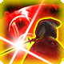

Système
Système
 Afin de fluidifier l'exploration du Labyrinthe, les joueurs peuvent désormais choisir de pénétrer dans le Labyrinthe à un étage choisi. Tout étage ignoré de cette manière dépensera 15 minutes de temps.
Afin de fluidifier l'exploration du Labyrinthe, les joueurs peuvent désormais choisir de pénétrer dans le Labyrinthe à un étage choisi. Tout étage ignoré de cette manière dépensera 15 minutes de temps.- Le système de jeu a été mis à jour de la version 3.3.1 à la version 4.1.2. Il s'agit d'une mise à jour majeure et il se peut donc que des problème soient apparus, notamment au niveau de la gestion des réactions. De plus, la plupart des modules majeurs utilisés sont encore en bêta, d'autres changements par la suite sont donc à prévoir.L'interface de lancer de dés à été intégralement revue.La quasi-totalité des aptitudes, objets, et équipements accessibles à ce stade ont été retravaillés pour être adaptés au système v4.Les objets et aptitudes disposent maintenant d'"Activités". Celles-ci permettent de réaliser des tâches pré-déterminées aux effets variés.Les jets de précision et de dégâts utilisent désormais le système d'Activités, ce qui modifie légèrement la manière de réaliser ces jets.Avant : Utilisation de l'objet -> Jet de précision -> Cliquer dans le tchat pour lancer les dégâts.Après : Utilisation de l'objet -> Sélectionner "Précision" -> Cliquer dans le tchat pour lancer la précision -> Cliquer dans le tchat pour lancer les dégâts.Après (Arme polyvalente) : Utilisation de l'objet -> Sélectionner "Précision" -> Cliquer dans le tchat pour lancer la précision -> Utilisation de l'objet -> Sélectionner "Dégâts" -> Cliquer dans le tchat pour lancer les dégâts.Ces modifications sont sujettes à changement. Adapter le système de précision que nous utilisons à la v4 fut très difficile et je continue à réflechir à des méthodes pour simplifier son utilisation.L'action "Recharge" des Fusils est désormais une Activité et s'utilise depuis le Fusil directement (Sélectionner "Recharge").Les jets de précision sont désormais correctement affichés avant les jets de dégâts dans le tchat.
- Ajout d'une nouvelle interface de gestion de l'équipement, celle-ci s'ouvre automatiquement avec votre fiche de personnage et vous permet de glisser vos objets vers celle-ci pour les équiper. Elle est individuellement désactivable sur demande.
- Le volet d'actions à été mis à jour. Il affiche désormais plus d'informations et il est possible de définir des aptitudes et objets en favoris.
- Le nom des grenades a été modifié ("Grenade" -> "Grenade basique").
- Les dégâts des grenades basiques ont été augmenté (1d4 + 2 -> 2d4 + 2).
- Les zones d'effets de certains objets et aptitudes disparaissent désormais automatiquement.
- Le calcul complet de la valeur de précision est désormais indiqué dans la description des objets.
- Le nombre de degrés restants d'un effet est désormais affiché sur son icône en haut à droite de l'écran.
- Le nom des aptitudes générales a été uniformisé ("Aider" -> "Aider - 2 PA (Action)").
- L'onglet "Actions" de la fiche de personnage a été renommé "Aptitudes".
- La valeur d'Offense présente sur la fiche de personnage a été supprimée.
- Les cascades du B1F et B2F ne sont plus animées.
- Un message indiquant à un personnage qu'il dispose d'un point d'Inspiration inutilisé est désormais affiché dans le tchat au début de chaque tour de combat.
- Des messages de rappel sont désormais indiqués dans la fenêtre de lancer de dés lorsque des bonus et/ou malus sont présents sur un personnage ou leur cible.De manière générale, les bonus d'Offense sont appliqués automatiquement. Les bonus de Précision sont à entrer manuellement dans la ligne "Bonus situationnel" pour l'instant.
- Les noms des 6 anneaux améliorant les jets de sauvegarde ont été modifié.Avant : Anneau de Force, Dextérité, Constitution, Intelligence, Sagesse, Charisme.Après : Anneau de Solidité, Adresse, Structure, Clairvoyance, Lucidité, Magnétisme.
- Les dégâts bonus de Poussée sanguine sont désormais lancés automatiquement une fois par tour.
Classes
 Souverain
Souverain
- Les dés d'Inspiration sont désormais correctement soustraits lors de l'utilisation d'aptitudes les consommant.
- La réserve de dés maximum du Souverain dépend désormais de l'aptitude Inspiration noble et augmente automatiquement avec le niveau. Seul le nombre maximum augmente automatiquement, le nombre de dés actuels doit être augmenté manuellement.
- Les bonus conférés par le Souverain sont désormais correctement appliqués.
 Lansquenet
Lansquenet
- Double frappe rappelle désormais au joueur qu'une attaque bonus est disponible lorsque le dé atteint sa valeur minimale.
- Le dé de Double frappe est désormais réduit au moment du jet de précision, au lieu du jet de dégâts.
 Shogun
- L'aptitude "Épée secondaire" est désormais activée avec une Activité, depuis l'arme équipée (Sélectionner "Précision (Action bonus)" au lieu de "Précision (Action)").
Vagabond
- L'effet de Tir de pistage s'applique désormais immédiatement et ne nécessite plus d'effectuer une attaque supplémentaire.
- Le compagnon animal a désormais accès aux aptitudes Esquiver, Foncer, Se cacher, Se désengager et Se tenir prêt.
- Les PA du Vagabond et de son compagnon animal sont désormais correctement partagés.
Problèmes connus
- Certaines réactions ne fonctionnent plus suite à la migration vers la v4. Elles seront graduellement restaurées à mesure que les modules dont elles dépendent se mettent à jour.Les attaques d'opportunités fonctionnent, mais partiellement, et servent plutôt de rappel, une aptitude "Attaque d'opportunité" a donc été ajoutée.Utilisation : Fenêtre d'attaque d'opportunité apparaît -> Sélectionner "Oui" -> Utiliser manuellement l'aptitude "Attaque d'opportunité" -> Cliquer dans le tchat pour lancer la précision -> Cliquer dans le tchat pour lancer les dégâts.
- L'aptitude Négociation du Souverain n'intervertis pas correctement les valeurs des bonus d'Ordre d'attaque et Ordre de garde.
- Le menu "Party Overview" ne fonctionne plus suite à la migration vers la v4 et a donc été temporairement retiré.
- Les bonus d'Offense n'apparaissent pas dans le calcul des dégâts dans la fenêtre de lancer de dés. Ils sont néanmoins correctement appliqués lors du lancer.